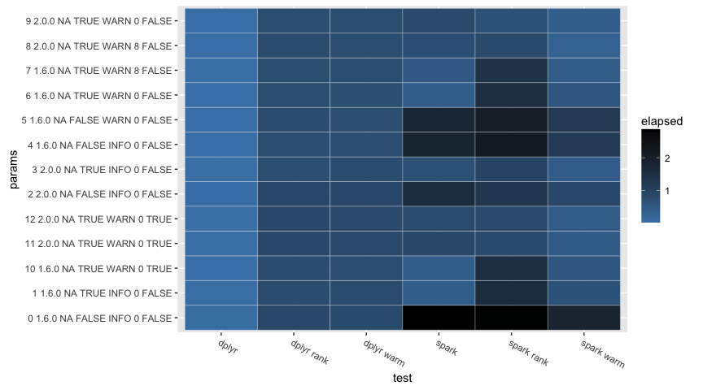
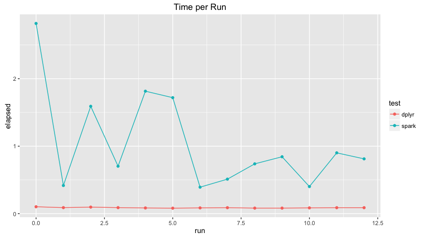
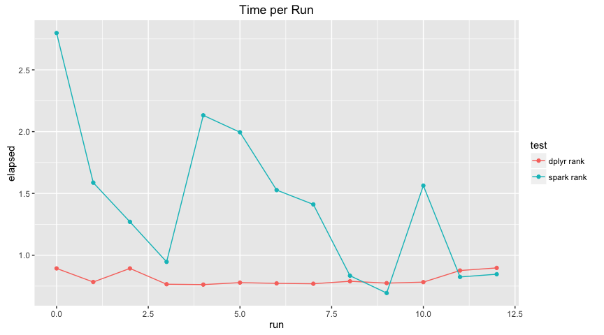
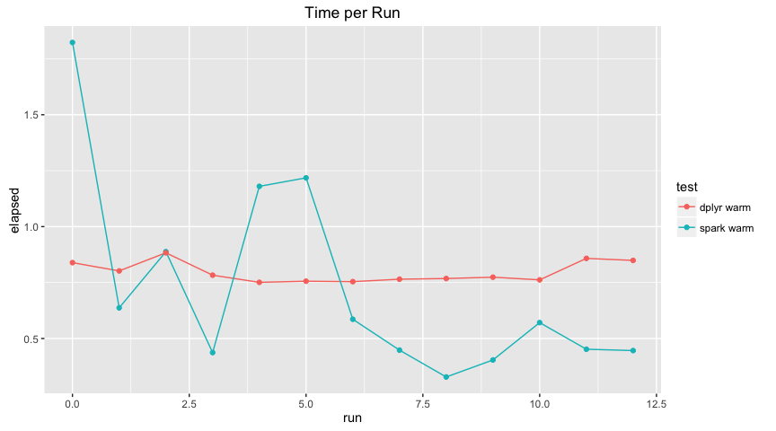

Performance: Dplyr Queries
Initialization
knitr::opts_chunk$set(warning = FALSE, cache = FALSE)
library(sparklyr)
library(dplyr)
##
## Attaching package: 'dplyr'
## The following objects are masked from 'package:stats':
##
## filter, lag
## The following objects are masked from 'package:base':
##
## intersect, setdiff, setequal, union
library(reshape2)
library(ggplot2)
summarize_delay <- function(source) {
source %>%
group_by(tailnum) %>%
summarise(count = n(), dist = mean(distance), delay = mean(arr_delay)) %>%
filter(count > 20, dist < 2000)
}
top_players <- function(source) {
source %>%
select(playerID, yearID, teamID, G, AB:H) %>%
arrange(playerID, yearID, teamID) %>%
group_by(playerID) %>%
filter(min_rank(desc(H)) <= 2 & H > 0)
}
top_players_by_run <- function(source) {
source %>%
select(playerID, yearID, teamID, G, AB:H) %>%
arrange(playerID, yearID, teamID) %>%
group_by(playerID) %>%
filter(min_rank(desc(R)) <= 2 & R > 0)
}
spark_perf_test <- function(params, tests) {
resultsList <- lapply(params, function(param) {
spark_install(version = param$version, reset = TRUE, logging = param$logging)
config <- spark_config()
if (!is.null(param$shuffle)) {
config[["spark.sql.shuffle.partitions"]] <- if(param$shuffle) parallel::detectCores() else NULL
}
if (!is.null(param$codegen)) {
config[["spark.sql.codegen.wholeStage"]] <- param$codegen
}
if (!is.null(param$cores)) {
config[["sparklyr.cores.local"]] <- if (is.na(param$cores)) NULL else param$cores
}
sc <- spark_connect(master = param$master, version = param$version, config = config)
copy_to(sc,
nycflights13::flights,
"flights",
memory = param$cache,
repartition = param$partitions)
copy_to(sc,
Lahman::Batting,
"batting",
memory = param$cache,
repartition = param$partitions)
sources <- list(
flights = tbl(sc, "flights"),
batting = tbl(sc, "batting")
)
testResults <- lapply(seq_along(tests), function(testNames, testNum) {
test <- tests[[testNum]]
testName <- names(tests)[[testNum]]
unname(c(
lapply(param, function(e) if (is.null(e)) NA else e),
list(
test = testName,
elapsed = system.time(test(db, sources) %>% collect)[["elapsed"]]
)
))
}, testNames = names(tests))
spark_disconnect(sc)
testResults
})
columnNames <- c(names(params[[1]]), list("test", "elapsed"))
resultsDF <- do.call(rbind.data.frame, unlist(resultsList, recursive = FALSE))
colnames(resultsDF) <- columnNames
resultsDF
}
spark_perf_single_test <- function(
runResults,
master,
cores,
version,
logging,
cache,
partitions,
optimizeShuffleForCores,
codegen) {
run <- length(runResults)
c(
runResults,
list(
spark_perf_test(
params = list(
list(
run = run,
master = master,
cores = cores,
version = version,
logging = logging,
cache = cache,
shuffle = optimizeShuffleForCores,
codegen = codegen,
partitions = partitions
)
),
tests = list(
`spark` = function(db, sources) {
sources$flights %>% summarize_delay %>% head
},
`dplyr` = function(db, sources) {
nycflights13::flights %>% summarize_delay %>% head
},
`spark rank` = function(db, sources) {
sources$batting %>% top_players %>% head
},
`dplyr rank` = function(db, sources) {
Lahman::Batting %>% top_players %>% head
},
`spark warm` = function(db, sources) {
sources$batting %>% top_players_by_run %>% head
},
`dplyr warm` = function(db, sources) {
Lahman::Batting %>% top_players_by_run %>% head
}
)
)
)
)
}
Results
runResults <- list()
runResults <- spark_perf_single_test(runResults, "local", NA, "1.6.0", "INFO", FALSE, 0, FALSE, FALSE)
runResults <- spark_perf_single_test(runResults, "local", NA, "1.6.0", "INFO", TRUE, 0, FALSE, FALSE)
runResults <- spark_perf_single_test(runResults, "local", NA, "2.0.0", "INFO", FALSE, 0, FALSE, FALSE)
runResults <- spark_perf_single_test(runResults, "local", NA, "2.0.0", "INFO", TRUE, 0, FALSE, FALSE)
runResults <- spark_perf_single_test(runResults, "local", NULL, "1.6.0", "INFO", FALSE, 0, FALSE, FALSE)
runResults <- spark_perf_single_test(runResults, "local", NULL, "1.6.0", "WARN", FALSE, 0, FALSE, FALSE)
runResults <- spark_perf_single_test(runResults, "local", NULL, "1.6.0", "WARN", TRUE, 0, FALSE, FALSE)
runResults <- spark_perf_single_test(runResults, "local", NULL, "1.6.0", "WARN", TRUE, 8, FALSE, FALSE)
runResults <- spark_perf_single_test(runResults, "local", NULL, "2.0.0", "WARN", TRUE, 8, FALSE, FALSE)
runResults <- spark_perf_single_test(runResults, "local", NULL, "2.0.0", "WARN", TRUE, 0, FALSE, FALSE)
runResults <- spark_perf_single_test(runResults, "local", NULL, "1.6.0", "WARN", TRUE, 0, TRUE, FALSE)
runResults <- spark_perf_single_test(runResults, "local", NULL, "2.0.0", "WARN", TRUE, 0, TRUE, FALSE)
runResults <- spark_perf_single_test(runResults, "local", NULL, "2.0.0", "WARN", TRUE, 0, TRUE, TRUE)
results <- do.call("rbind", runResults)
results <- results %>%
mutate(params = paste(run, version, cores, cache, logging, partitions, shuffle))
results %>%
filter(test == "spark" | test == "dplyr") %>%
rename(part = partitions) %>%
dcast(run + cores + version + logging + part + shuffle + codegen ~ test, value.var = "elapsed")
## run cores version logging part shuffle codegen dplyr spark
## 1 0 NA 1.6.0 INFO 0 FALSE FALSE 0.102 2.819
## 2 1 NA 1.6.0 INFO 0 FALSE FALSE 0.089 0.417
## 3 2 NA 2.0.0 INFO 0 FALSE FALSE 0.097 1.591
## 4 3 NA 2.0.0 INFO 0 FALSE FALSE 0.089 0.703
## 5 4 NA 1.6.0 INFO 0 FALSE FALSE 0.084 1.815
## 6 5 NA 1.6.0 WARN 0 FALSE FALSE 0.081 1.719
## 7 6 NA 1.6.0 WARN 0 FALSE FALSE 0.085 0.392
## 8 7 NA 1.6.0 WARN 8 FALSE FALSE 0.088 0.511
## 9 8 NA 2.0.0 WARN 8 FALSE FALSE 0.082 0.738
## 10 9 NA 2.0.0 WARN 0 FALSE FALSE 0.082 0.843
## 11 10 NA 1.6.0 WARN 0 TRUE FALSE 0.085 0.401
## 12 11 NA 2.0.0 WARN 0 TRUE FALSE 0.088 0.901
## 13 12 NA 2.0.0 WARN 0 TRUE TRUE 0.088 0.812
results %>%
filter(test == "spark rank" | test == "dplyr rank") %>%
rename(part = partitions) %>%
dcast(run + cores + version + logging + part + shuffle ~ test, value.var = "elapsed")
## run cores version logging part shuffle dplyr rank spark rank
## 1 0 NA 1.6.0 INFO 0 FALSE 0.893 2.798
## 2 1 NA 1.6.0 INFO 0 FALSE 0.783 1.587
## 3 2 NA 2.0.0 INFO 0 FALSE 0.893 1.270
## 4 3 NA 2.0.0 INFO 0 FALSE 0.765 0.946
## 5 4 NA 1.6.0 INFO 0 FALSE 0.762 2.132
## 6 5 NA 1.6.0 WARN 0 FALSE 0.778 1.995
## 7 6 NA 1.6.0 WARN 0 FALSE 0.772 1.527
## 8 7 NA 1.6.0 WARN 8 FALSE 0.769 1.411
## 9 8 NA 2.0.0 WARN 8 FALSE 0.789 0.834
## 10 9 NA 2.0.0 WARN 0 FALSE 0.774 0.694
## 11 10 NA 1.6.0 WARN 0 TRUE 0.782 1.563
## 12 11 NA 2.0.0 WARN 0 TRUE 0.876 0.824
## 13 12 NA 2.0.0 WARN 0 TRUE 0.897 0.846
results %>%
filter(test == "spark warm" | test == "dplyr warm") %>%
rename(part = partitions) %>%
dcast(run + cores + version + logging + part + shuffle ~ test, value.var = "elapsed")
## run cores version logging part shuffle dplyr warm spark warm
## 1 0 NA 1.6.0 INFO 0 FALSE 0.839 1.823
## 2 1 NA 1.6.0 INFO 0 FALSE 0.802 0.637
## 3 2 NA 2.0.0 INFO 0 FALSE 0.883 0.888
## 4 3 NA 2.0.0 INFO 0 FALSE 0.783 0.437
## 5 4 NA 1.6.0 INFO 0 FALSE 0.751 1.180
## 6 5 NA 1.6.0 WARN 0 FALSE 0.756 1.218
## 7 6 NA 1.6.0 WARN 0 FALSE 0.754 0.586
## 8 7 NA 1.6.0 WARN 8 FALSE 0.765 0.448
## 9 8 NA 2.0.0 WARN 8 FALSE 0.768 0.328
## 10 9 NA 2.0.0 WARN 0 FALSE 0.774 0.404
## 11 10 NA 1.6.0 WARN 0 TRUE 0.762 0.571
## 12 11 NA 2.0.0 WARN 0 TRUE 0.858 0.452
## 13 12 NA 2.0.0 WARN 0 TRUE 0.849 0.446
results %>%
filter(test != "dplyr" | test != "spark") %>%
ggplot(aes(test, params)) +
geom_tile(aes(fill = elapsed), colour = "white") +
scale_fill_gradient(low = "steelblue", high = "black") +
theme(axis.text.x=element_text(angle=330, hjust = 0))

results %>%
filter(test == "dplyr" | test == "spark") %>%
ggplot(aes(x=run, y=elapsed, group = test, color = test)) +
geom_line() + geom_point() +
ggtitle("Time per Run")

results %>%
filter(test == "dplyr rank" | test == "spark rank") %>%
ggplot(aes(x=run, y=elapsed, group = test, color = test)) +
geom_line() + geom_point() +
ggtitle("Time per Run")

results %>%
filter(test == "dplyr warm" | test == "spark warm") %>%
ggplot(aes(x=run, y=elapsed, group = test, color = test)) +
geom_line() + geom_point() +
ggtitle("Time per Run")
